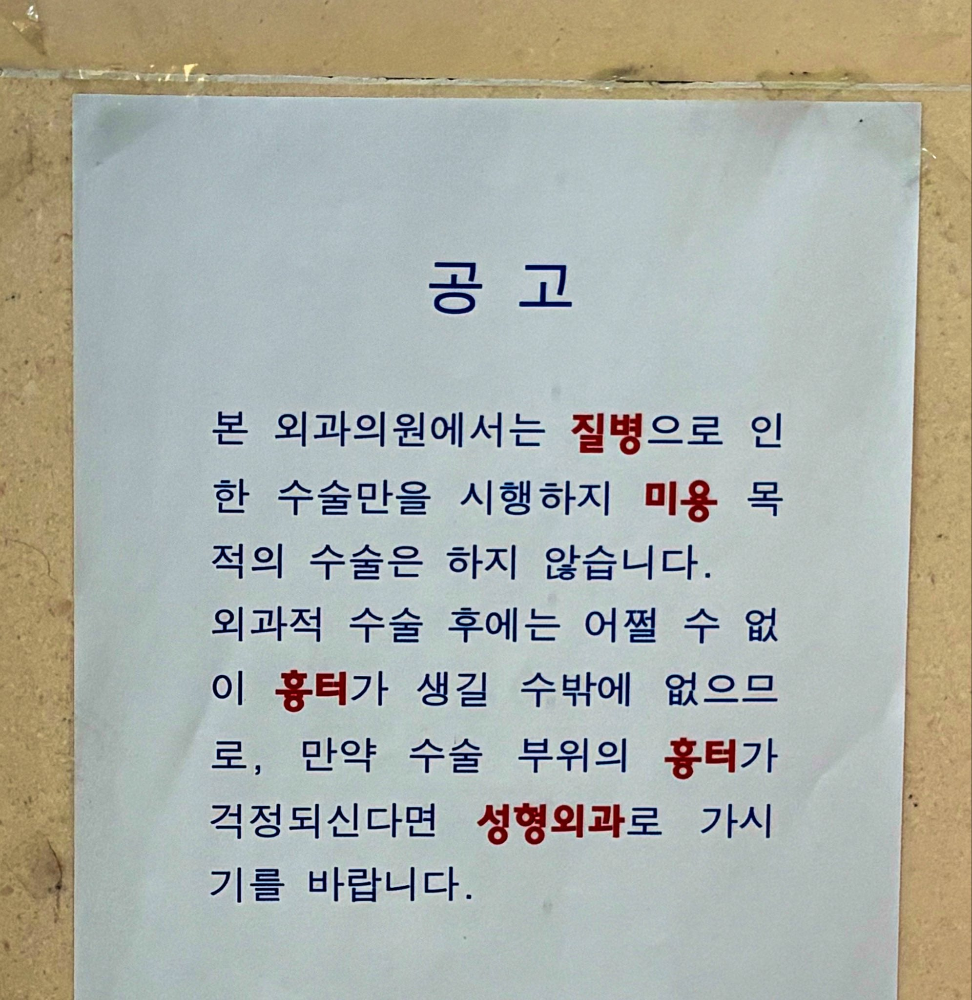

많은 일이 있었을 것 같은 공고문
댓글
Ai에 너무 찌들어서 그런지 이것도 ai로 딸깍 만든것 같다
공고문 내용을 얘기하는거야? 저 상황 자체를 얘기하는거야?
상황이 AI 라는게 뭔 소리야?
저 '공고가 붙어있는 현장 사진' 그 자체를 ai로 만들었냐는 말
얘 말 하나 이해못하는애들이 두명이나 있는게 더 AI같다
ㄹㅇㅋㅋㅋㅋ
Ai한테 물어보니 ai 맞대
그래서 난 어디 째지면 성형외과 감
성형외과에서 외과수술도해줌?
성형외과도 외과잖아 봉합정도는 다 해줌. 그냥 외과랑 쓰는 바늘이나 실도 다르고 훨씬 꼼꼼하게 꼬맨다
뼈부러진거이런건못하지않아?
그래서 난 어디 뿌라지면 공업사 감
일반 외과도 뼈부러진건 못해
외과가뼈부러진거 고치는곳인데...
그건 정형외과
???
그건 정형외과야
보험 안되지 않음?
될때도 있고 안될때도 있던데 자세한 기준은 나도 모르겠음
난 손가락이 깊게 베어서 진짜 바로앞에 있는 성형외과 갔는데 자기들은 미용시술만 한다고 그냥 응급실가라함. 뭐 어디가 어떻게 아픈지 어디까지 협진이 필요할지 모르니까 응급실 가는게 맞긴한데 이정도는 금방 해줄 수있는거 아닌가 싶었는데 안해주더라 ㅋㅋㅋㅋ
손가락은 전문 병원 가는게 맞을껄 나도 손가락 반토막 났을때는 수지접합 전문병원가서 수술받았음
그건 거기가는게 맞지...
손가라간토막났을때 엄청무서웠을듯....난상상만해도 내손가락동강나면 패닉올것같은데
근데 막상 칼 박히면 아프지도 않고 피도 많이 나는게 아니라 패닉은 안옴. 대신 주변사람들이 패닉이 옴
다친 사람 입장에선 살가죽 째진거 봉합만 해주면 되는거 아니냐 생각하겠지만 손가락은 섬세한 운동을 하기위한 신경이 많이 지나가서 신경손상된거 확인 안하고 봉합만 해서 넘어가면 나중에 손가락 잘 안움직여 질수 있어서 그럴듯
나도 작년에 손가락 꽤 깊이 베였는데 정형외과 원장님이 손가락 감각 어디까지 살아있나 집요하게 촉진하고 며칠 간격으로 드레싱 받으러 갈때도 감각 살아있는지 확인하더라
잘꼬매는걸로 유명한 성형외과는 자빠져서 다틴 잼민이들 엄청 많더라
흉터옅어지는연고발라주니까 한2년지나니모르겠던데.비급여도아님.
응급실 일할때 의사가 50대이상 아저씨 아줌마들은 얼굴부분 꼬메주는데 그거보다 어린사람오면 흉터남는다 베타딘때문에 얼굴 착색된다 경고 존나 하고 꼬메고 나중에 흉터생겼다고 나원망하지마라까지 말하고 해주더라 ㅋㅋ
요즘 저런 제대로 된 외과 진짜 찾기 힘듬. 동네에 연세 많은 의사샘이 운영하는 구멍가게 같이 생긴 옛날 외과 있는데 항상 미어 터짐 ㅋㅋ
외과들도 미용상 중요한 부분 수술할때는 성형외과방식으로 봉합해주던데.
ㄹㅇ로 흉터남을수있는데 괜찮으세요? 흉터안남고싶으시면 성형외과로가라고 안내해줌 진짜 안남는진 몰루
턱이랑 목걸친라인에 피지종? 생겨서 정형외과 갔더니 흉진다고 성형외과 가라더라 상관없다고 그냥 째달라고 하고 째고 옴
ㅋㅋㅋㅋ 피지종이 생겼는데 왜 정형외과를 갔어
어딜갈지 몰라서 헿
ㄹㅇ 왜 정형외과를 가 ㅋㅋㅋ 피부과나 성형외과를 가야지 ㅅㅂ ㅋㅋㅋ
이마에 혹이 안없어져서. 동네 정형외과 갔더니 70대 할부지가 풋볼매니저fm하고 있다가 진료 봐주시는데. 째주시는데 흉터생길수밖에 없어요. 그후로 앞머리로 흉터 가리고 다닌다.
진상들은 한국말도 못 알아쳐먹는데 한글이라 알아먹을까